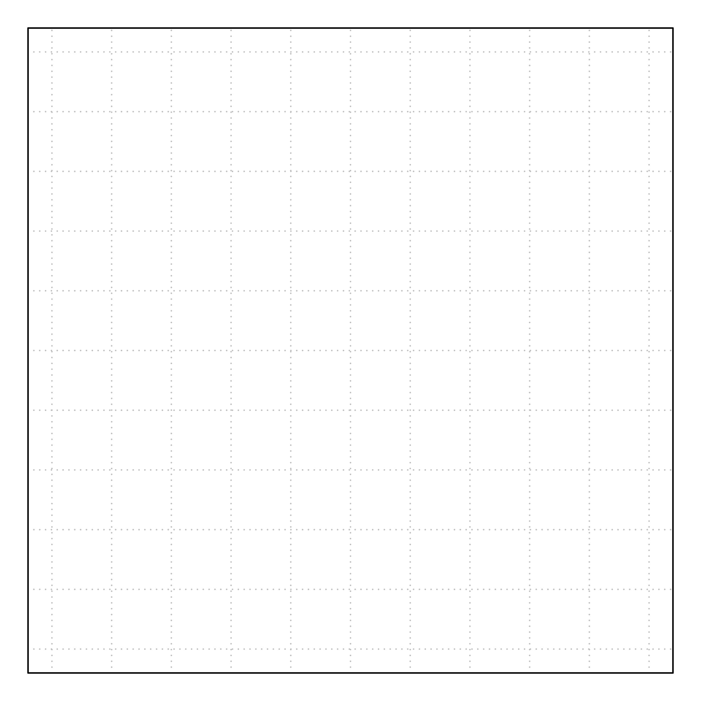

The next topic, limits of functions, is almost a purely mathematical topic, but one we will soon use to develop one of the central concepts of calculus. Imagine yourself working in the lab, about to undertake an exciting experiment. Before you can dive in, you must first orient yourself with your equipment, calibrate it, and practice a few basic techniques. Think of this topic, limits 1 , as an orientation to an important piece of machinery.
Limits.
In addition to eventually allowing us to compute instantaneous rates of change (derivatives) of mathematical functions, we use limits to study and describe behavior of functions.
Concept of a limit.
For a function \(f(x)\) and two numbers \(a\) and \(L\text{,}\) the statement
means that “the value of \(f(x)\) gets closer and closer to \(L\) as \(x\) gets closer and closer to \(a\text{.}\)” Sometimes we say more simply that “the value of \(f(x)\) approaches \(L\) as \(x\) approaches \(a\text{.}\)” This helps us explain and compute ‘what \(f(x)\) does’ near a point \(x=a\) even if \(f(a)\) is undefined!

Figure1.7.1.image
One– and two–sided limits.
Some functions have complicated domains and we can only discuss what happens as \(x\) approaches \(a\) from one side. We say one of the following:
Figure1.7.2.imageFigure1.7.3.image
Consider the appropriate one–sided and two–sided limits for the following functions.
Notice that the only (two-sided) limit to not exist is the one that corresponds to the most complicated of the three graphs in its most complicated portion (left panel: near \(x=0\)). This is because the one-sided limits of the \(\operatorname{sgn(x)}\) function do not match as \(x\) approaches \(0\) from the left and right. In all other cases we are looking at graphs that ‘look more familiar’ (no jumps, no open or filled points) at the points we are evaluating the limits. Also notice that
we can say things like \(x\to-0.5^+\) which refers to our attempt to approach the \(x\) value of \(-0.5\) from the right hand side.
the superscript has nothing to do with the sign of the number itself, only the direction from which we approach the number.
We will spend most of our time looking at two-sided limits once we get an understanding of some important categories of functions.
Theorem1.7.10.limits of combinations of functions.
Suppose \(f(x)\) and \(g(x)\) are functions with well-defined limits at \(x=a\text{.}\)
Since a polynomial (e.g., a quadratic or a cubic function) is the sum of terms that involve variables (like \(x\)) to powers (like \(x^{2}\)) multiplied by constants (like \(3x^{2}\)), we could decompose limits of polynomials using Theorem 1.7.10 and evaluate them with Theorem 1.7.7.
When studying a function such as \(\displaystyle f(x) = \frac{1}{x}\text{,}\) we must be aware that the function is undefined at \(x=0\text{.}\) When talking about the limits,
since we can only approach \(x=0\) from above (the right side of the number line). Fortunately for us, square root functions do not show up a great deal in biological applications.
\(\displaystyle \lim_{x\to0^+}\dfrac{1}{x^{3}} =
+\infty\text{,}\) and finally
since the previous two answers for one-sided limits do not match, the two-sided limit \(\displaystyle
\lim_{x\to0}\dfrac{1}{x^{3}}\) does not exist, written in shorthand as \(\displaystyle \lim_{x\to0}\dfrac{1}{x^{3}} = \text{DNE}\) or \(\displaystyle \lim_{x\to0}\dfrac{1}{x^{3}}\text{ DNE}\)
Limits are undoubtedly important throughout mathematics and fill a whole chapter of a typical calculus course. They are central for many topics in advanced mathematics, but we will take just a brief look into limits.